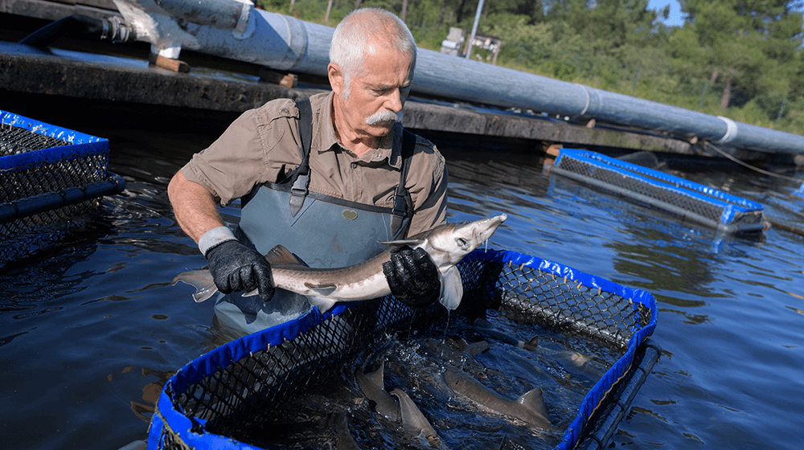

<!DOCTYPE html>
<html lang="en"></html>
<html>
    <head>
        <meta charset="utf-8">
        <title>Martin's Aquarium</title>
        <link rel="stylesheet" href="./styles/main.css">
        <link rel="preconnect" href="https://fonts.googleapis.com">
        <link rel="preconnect" href="https://fonts.gstatic.com" crossorigin>
        <link rel="stylesheet" href="https://fonts.googleapis.com/css2?family=Mali&display=swap" >
    </head>

    <body>
        <!--NAV BAR-->
        <header>
            <nav class="navbar">
                <!--Logo Image-->
                

                <h1>Martin's Aquarium</h1>

                <!-- NAVIGATION MENU -->
                <ul class="nav-links">
                <!-- USING CHECKBOX HACK -->
                <input type="checkbox" id="checkbox_toggle" />
                <label for="checkbox_toggle" class="hamburger">&#9776;</label>
                    <!-- NAV MENUS -->
                    <div class="menu">
                        <li><a href="#">HOME</a></li>
                        <li><a href="#">ABOUT</a></li>
                        <li><a href="#">CONTACT</a></li>
                    </div>
                </ul>
            </nav>
        </header>

        <main>
            <!--3 VERTICAL COLUMNS LAYOUT-->
            <div class="container">
                <!--QUOTES-->
                <div class="column">
                    <section class="quotes">
                        <h3>Martin's Wise Quotes</h3>
                        <p><q>Remember folks, fish are like relatives. After two days, they stink.</q></p>
                        <p><q>When you fish for love, bait with your heart, not your brain.</q></p>
                        <p><q>Why do scuba divers fall backward off a boat? Because if they fell forward, they'd still be in the boat.</q></p>
                        <p><q>If fishing is a religion, fly fishing is high church.</q></p>
                        <p><q>It's another world what the sea gives us. It's paradise.</q></p>
                        <p><q>As every scuba diver knows, panic is your worst enemy.</q></p>  
                    </section>
                <!--DIVIDER-->
                    <hr>
                    <br>

                <!--LOCATIONS BELOW QUOTES-->
                    <section class="locations">
                        <h3>Where In The World Does Martin Harvested Fish?</h3>
                        
                            <p class="locations_paragraph">I began traveling in 1961, harvesting fish around the globe. I kept a small notebook of all the beautiful locations that I visited. Here are my top 10 locations for harvesting fish:</p>

                            <div class="list_locations">
                                <ol>
                                    <li>Bighorn River, Montana</li>
                                    <li>Lake Tahoe, California</li>
                                    <li>Tanzania, Africa</li>
                                    <li>Tierra del Fuego, Argentina</li>
                                    <li>Gulf of Chiriqui, Panama</li>
                                    <li>Kiritimati, South of Hawaii</li>
                                    <li>Haida Gwaii, Canada</li>
                                    <li>Cairs and Lizard Islands, Australia</li>
                                    <li>Umba River, Russia</li>
                                    <li>Jerome Lake, Alaska</li>
                                </ol>
                    </section>
                </div>

                <!--FISH LIST AND IMAGES-->
                <div class="column">
                    <div class="fish_collect">
                        <h3>Martin's Fish Collection</h3>
                            <section class="fishList"></section>
                                <div class="fish_card"></div>
                            </section>
                    </div>
                </div>

                <!--BLOG POSTS-->
                <div class="column">
                     <aside>
                        <div class="blogs">
                            <h3>Fisherman's Corner</h3>
                                <div class="salinity">
                                    
                                            
                                        <p class="salinity_title">Why It's Important To Maintain Stable Salinity In Saltwater Tanks.</p>
                                            <p class="date">Published on January 5, 2022</p>
                                            <br>
                                
                                            <p> The salinity increases as the water volume decreases when evaporation occurs in your aquarium. As a solution, replace the evaporated water with an equal volume of purified fresh water will keep the salinity at the appropriate amount that you need it. However, don't let too much time elapses between top offs because the longer you wait, the steeper the fluctuation in salinity will be. Freshwater top offs should be a daily occurrence.</p>
                                            <br>
    
                                            <p>If you replace salt water, it must exactly match the same amount of salinity as the dirty water that you will be removing. Measurements are not always accurate so I advise you to let the water sit overnight while it is being heated to match your tank's temperature and aerated. Don't forget to test it before using the water then carefully make some adjustments as needed.</p>
                                </div>
                                <!--DIVIDER-->
                                <br>
                                <br>
                                <hr>
                                <!--Blog POST 2-->
                                <div class="salt">
                                    
                                        <p class="salt_title">Salt Creep</p>
                                            <p class="date">Published on December 12, 2021</p>
                                            <br>
                                
                                            <p>That crusty salt build-up that you see on any part of the aquarium tank is called salt creep. It occurs when exposed to air and saltwater spray. It also can decreases the salinity which means you will need to compensate by adding sea salt in small quantities in your tank.</p>
                                </div>
                                <!--DIVIDER-->
                                <br>
                                <br>
                                <hr>

                                <!--BLOG POST 3-->
                                <div class="temp">
                                    
                                        <p class="temp_title">How To Maintain Fish Tank Temperature</p>
                                            <p class="date">Published on October 31, 2021</p>
                                            <br>

                                            <p>It is essential to maintain temperature control to keep your fish alive and comfortable. If you don't, negative consequences can occur such as:</p>
                                            <br>
                                            <ul>
                                                <li>Chemical balance can be changed by algae growth or plant decay</li>
                                                <li>Bacteria growth can lead to illnesses or death of fish</li>
                                                <li>Water oxygenation levels can be life-threatening to your fish</li>
                                            </ul>
                                            <br>
                                            <p>To regulate and maintain the aquarium tank's temperature, use a thermometer to monitor, invest in a high quality heater, consider a chiller, add properly balanced conditioned water to the tank to maintain constant water level and positioned the tank carefully in your home. Think about the room layout. I advised you to keep your tank away from windows and drafty areas or fans which impacts the temperature as well. You can prevent temperature fluctuations if you follow all of my wise tips.</p>
                                        </p>
                                </div>
                        </div>
                    </aside>    
                </div>
            </div>
        </main>
        
        <script type="module" src="./scripts/main.js"></script>
    </body>
</html>